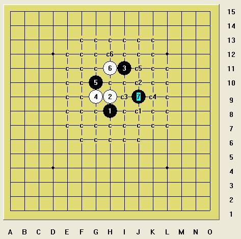
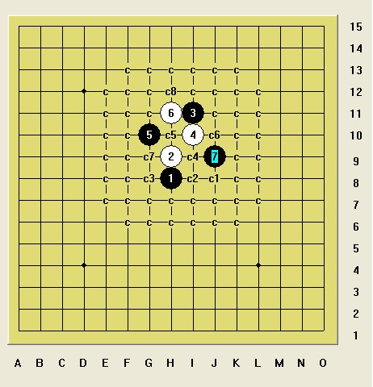
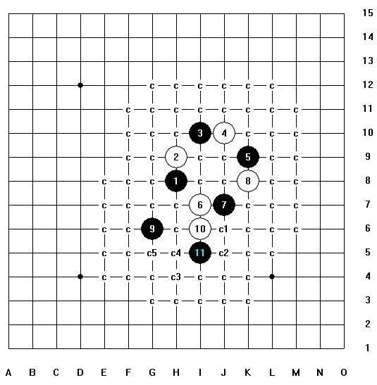
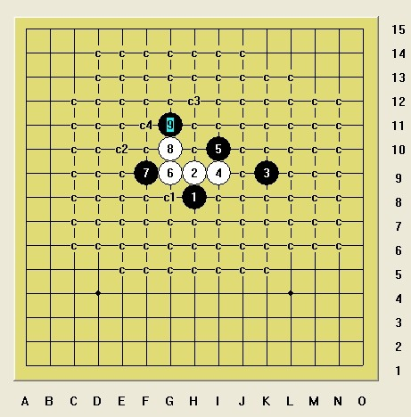

妖刀里的3个地毯黑八卦，截图征集更多八卦黑必胜
#1 妖刀里的3个地毯黑八卦，截图征集更多八卦黑必胜作者：26 发表时间：2014-1-9 18:33:46


以上3个黑八卦地毯源于我们明教逆刃大溪月必胜地毯和最后连心4二打必胜地毯里。
妖刀里面这几个地毯八卦，截图征集更多八卦黑必胜，
白必胜也行，版主送花。
［ 失落刀 于 2014-1-9 18:38:45 时奖励此帖[金币加 100 威望加1］
［此帖子已被 26 在 2014-1-9 18:41:05 编辑过］
#2 Re:妖刀里的3个地毯黑八卦，截图征集更多八卦黑必胜作者：日月丽天 发表时间：2014-1-9 18:43:42
都是7手成卦，7手地毯#3 Re:妖刀里的3个地毯黑八卦，截图征集更多八卦黑必胜作者：趁晨陈尘沉 发表时间：2014-1-10 13:55:45
这个有可能吗？［ 失落刀同学于 2014-1-10 15:10:21 时花20金币送鲜花一朵］
［ 失落刀同学于 2014-1-10 15:10:21 时花20金币送鲜花一朵］
［ 失落刀同学于 2014-1-10 15:10:21 时花20金币送鲜花一朵］
［ 失落刀同学于 2014-1-10 15:10:21 时花20金币送鲜花一朵］
［ 失落刀同学于 2014-1-10 15:10:21 时花20金币送鲜花一朵］
［ 失落刀同学于 2014-1-10 15:10:21 时花20金币送鲜花一朵］
［ 失落刀同学于 2014-1-10 15:10:21 时花20金币送鲜花一朵］
［ 失落刀同学于 2014-1-10 15:10:21 时花20金币送鲜花一朵］
［ 失落刀同学于 2014-1-10 15:10:21 时花20金币送鲜花一朵］
［ 失落刀同学于 2014-1-10 15:10:21 时花20金币送鲜花一朵］
［ 失落刀同学于 2014-1-10 15:10:21 时花20金币送鲜花一朵］
［ 失落刀同学于 2014-1-10 15:10:21 时花20金币送鲜花一朵］
#4 Re:妖刀里的3个地毯黑八卦，截图征集更多八卦黑必胜作者：趁晨陈尘沉 发表时间：2014-1-10 14:27:10
 前来献丑一个两个八卦环的。
前来献丑一个两个八卦环的。

［此帖子已被 釣鱼岛岛主 在 2014-1-10 15:33:16 编辑过］
［ 失落刀 于 2014-1-10 18:02:20 时奖励此帖[金币加 100 威望加1］
#5 Re:妖刀里的3个地毯黑八卦，截图征集更多八卦黑必胜作者：趁晨陈尘沉 发表时间：2014-1-10 14:36:29
骗花骗花
［此帖子已被 釣鱼岛岛主 在 2014-1-10 15:33:40 编辑过］
［ 失落刀 于 2014-1-10 18:03:31 时奖励此帖[金币加 100 威望加1］
#6 Re:妖刀里的3个地毯黑八卦，截图征集更多八卦黑必胜作者：失落刀 发表时间：2014-1-10 15:09:22
4楼5楼看不到图。#7 Re:妖刀里的3个地毯黑八卦，截图征集更多八卦黑必胜作者：失落刀 发表时间：2014-1-10 15:11:07
3楼的7胜，或换其他7胜，都赠送威望。#8 Re:妖刀里的3个地毯黑八卦，截图征集更多八卦黑必胜作者：釣鱼岛岛主 发表时间：2014-1-10 15:54:51
有图了#9 Re:妖刀里的3个地毯黑八卦，截图征集更多八卦黑必胜作者：失落刀 发表时间：2014-1-10 18:05:43
5楼的5陈同学，目测你这个八卦换了好几个威望了，祝贺。#10 Re:26【==妖刀里的3个地毯黑八卦，截图征集更多八卦黑必胜==】作者：哥哥哥哥三二一 发表时间：2014-1-14 8:57:57
引用：
原文由 26 发表于 2014-1-9 18:33:46 :妖刀里面几个八卦，截图征集更多八卦黑必胜

我也来一张
#11 Re:妖刀里的3个地毯黑八卦，截图征集更多八卦黑必胜作者：日月丽天 发表时间：2014-1-14 9:56:10
你看一楼第一个图，和你这个图有什么区别？#12 Re:日月丽天【==Re:妖刀里的3个地毯黑八卦，截图征集更多八卦黑必胜==】作者：哥哥哥哥三二一 发表时间：2014-1-14 10:14:01
引用：
原文由 日月丽天 发表于 2014-1-14 9:56:10 :
你看一楼第一个图，和你这个图有什么区别？
报告楼上的，里面是有区别呢，单形状上看，我图里的白棋都围着黑棋第1手的棋子是八卦比较高那个腿上的。
把形状弄得和第一楼的八卦形状相似时是这样呈现的：

［此帖子已被 哥哥哥哥三二一 在 2014-1-14 10:18:10 编辑过］
#13 Re:妖刀里的3个地毯黑八卦，截图征集更多八卦黑必胜作者：日月丽天 发表时间：2014-1-14 10:45:37
一楼的大溪月的八卦的246，调成642就是大残月上的八卦。#14 Re:妖刀里的3个地毯黑八卦，截图征集更多八卦黑必胜作者：哥哥哥哥三二一 发表时间：2014-1-14 11:07:01
汗~~~，好像是这样的~~~ 再次检查发现，前面的不算~~~
再次检查发现，前面的不算~~~
我再来个简单的形状，这个好像没人发过吧

［此帖子已被 哥哥哥哥三二一 在 2014-1-14 11:09:06 编辑过］
［ 日月丽天 于 2014-1-14 11:14:14 时奖励此帖[金币加 100 威望加1］
#15 Re:妖刀里的3个地毯黑八卦，截图征集更多八卦黑必胜作者：逆刃 发表时间：2014-1-14 22:28:37
借花献佛可以不？
［ 失落刀同学于 2014-1-15 7:13:21 时花20金币送鲜花一朵］
［ 日月丽天同学于 2014-1-15 8:08:13 时花20金币送鲜花一朵］
［ 日月丽天同学于 2014-1-15 8:08:13 时花20金币送鲜花一朵］
［ 日月丽天同学于 2014-1-15 8:08:13 时花20金币送鲜花一朵］
#16 re作者：哥哥哥哥三二一 发表时间：2014-1-15 8:30:44
我的威望不够5，附件也上传不了 ，只好又作一个简单的白棋图案的八卦里的简谱必杀路数摆上 - -~~~
，只好又作一个简单的白棋图案的八卦里的简谱必杀路数摆上 - -~~~
 一个八卦必杀的简谱
一个八卦必杀的简谱［此帖子已被 哥哥哥哥三二一 在 2014-1-15 9:20:44 编辑过］
#17 Re:妖刀里的3个地毯黑八卦，截图征集更多八卦黑必胜作者：屏蔽 发表时间：2014-1-15 9:31:49
白必胜
#18 Re:屏蔽【==Re:妖刀里的3个地毯黑八卦，截图征集更多八卦黑必胜==】作者：哥哥哥哥三二一 发表时间：2014-1-15 9:45:48
引用：
原文由 屏蔽 发表于 2014-1-15 9:31:49 :
白必胜
我想这个下黑棋的人一定非常自信自己的第9感，他认为他能够不用眼睛看棋盘也能点下八卦令我这只菜鸟全心折服，于是。。。 ~~~
~~~
［此帖子已被 哥哥哥哥三二一 在 2014-1-15 9:57:35 编辑过］
［ 失落刀同学于 2014-1-21 16:15:14 时花20金币送鲜花一朵］
#19 Re:妖刀里的3个地毯黑八卦，截图征集更多八卦黑必胜作者：日月丽天 发表时间：2014-1-15 10:38:28
上乘的为了一个开局必胜而非得走八卦，下乘的是为一个八卦棋形而去做地毯，无厘头的时时刻刻都随意都能有八卦。大致三种境界吧。［此帖子已被 日月丽天 在 2014-1-15 10:45:18 编辑过］
［ 失落刀同学于 2014-1-21 16:15:49 时花20金币送鲜花一朵］
#20 Re:妖刀里的3个地毯黑八卦，截图征集更多八卦黑必胜作者：日月丽天 发表时间：2014-1-21 8:43:54
增添一地毯八卦，是出于最近的大残月。

9手成卦地毯，7没时间成卦，因为要堵6活三，但也是卦点。
［ 平凡人生同学于 2014-1-21 14:27:45 时花20金币送鲜花一朵］
［ 平凡人生同学于 2014-1-21 14:27:45 时花20金币送鲜花一朵］
［ 失落刀 于 2014-1-21 16:16:26 时奖励此帖[金币加 100 威望加1］
［ 哥哥哥哥三二一同学于 2014-1-29 18:08:19 时花20金币送鲜花一朵］
#21 Re:日月丽天【==Re:妖刀里的3个地毯黑八卦，截图征集更多八卦黑必胜==】作者：平凡人生 发表时间：2014-1-21 14:30:44
丽天老师能分享下不
#22 Re:妖刀里的3个地毯黑八卦，截图征集更多八卦黑必胜作者：小帮帮 发表时间：2014-1-21 14:38:19
20楼，1,3,5，7手的形状，也算是一种八卦吧#23 Re:平凡人生【==Re:日月丽天【==Re:妖刀里的3个地毯黑八卦，截图征集更多八卦黑必胜==】==】作者：日月丽天 发表时间：2014-1-23 17:21:14
这个卦不是太难，你先试一试，有问题的话发图就可以#24 Re:妖刀里的3个地毯黑八卦，截图征集更多八卦黑必胜作者：趁晨陈尘沉 发表时间：2014-4-24 1:02:22
之前发过谱，在这发个图
［ 逆刃同学于 2014-4-24 17:22:12 时花20金币送鲜花一朵］